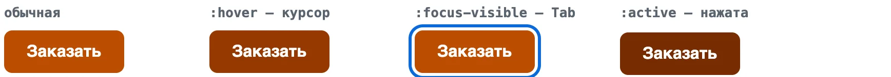
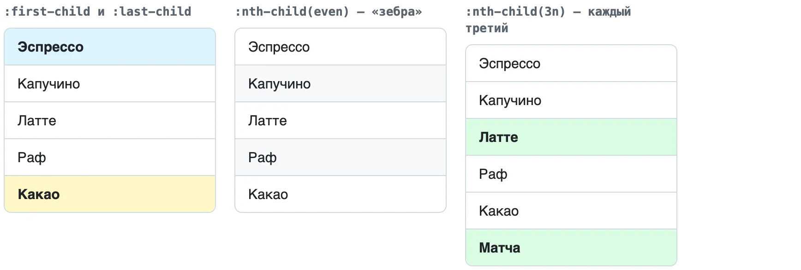
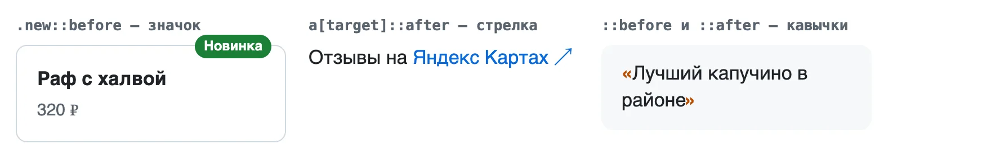
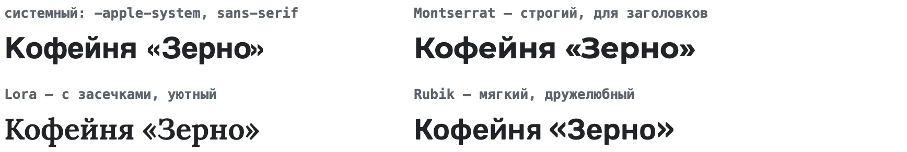
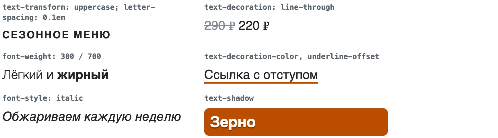
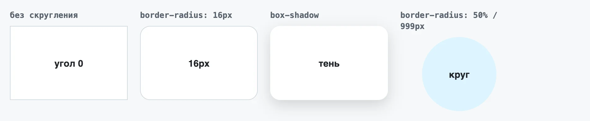
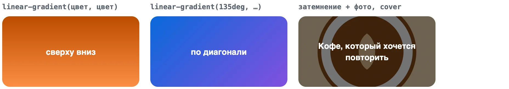
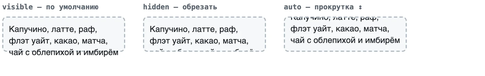
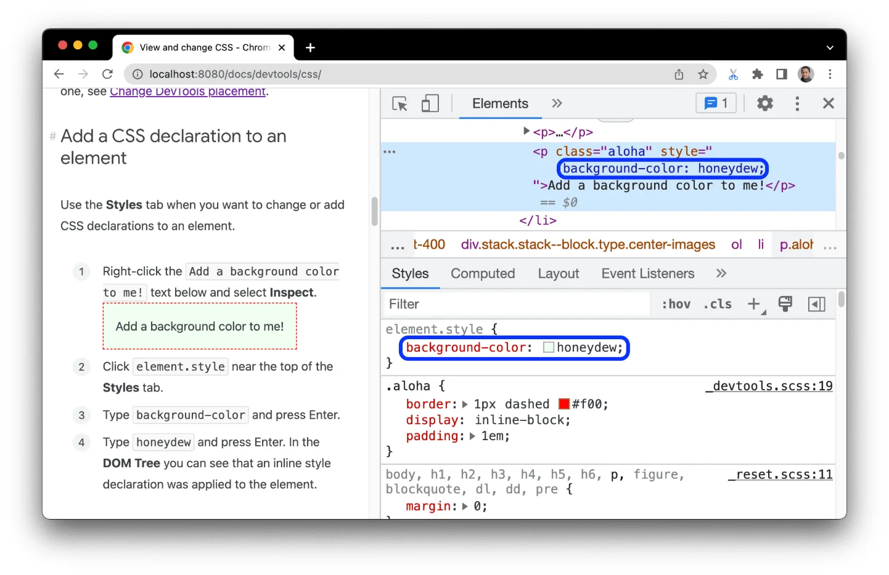

Модуль 1. HTML и CSS. Урок 6
Селекторы, каскад, box model
Фронтенд с нуля
Часть 1
Подключаем стили и пишем правило
HTML — что есть на странице. CSS — как это выглядит
Кнопка без CSS серая, но работает
<link rel="stylesheet" href="css/style.css"><link rel="stylesheet" href="css/style.css">h1color: brown;font-size: 2rem;h1 { color: brown; font-size: 2rem; }Часть 2
Кого красим и кто побеждает в споре
| Селектор | Что выбирает |
|---|---|
p |
все абзацы |
.card |
класс card |
nav a |
ссылки внутри nav |
h1, h2 |
и то и другое |
#logo |
id — для стилей лучше класс |
.card, .card-title, .main-nav.red-text устареет, когда цвет поменяют.price-old, не .ЦенаСтарая
:hover · :focus-visible · :active — ответ на каждое действие

:first-child, :last-child, :nth-child(even)

Украшение без лишнего тега. Без content не появится
| Селектор | Выбирает |
|---|---|
input[type="email"] |
поля для почты |
a[target="_blank"] |
ссылки в новой вкладке |
a[href^="tel:"] |
ссылки на телефон |
p.note#promostyle="…"При равном весе — правило ниже в файле
<p class="note" id="promo">Какого я цвета?</p>#promo { color: purple; }
.note { color: green; }
p { color: red; }| Наследуются | Не наследуются |
|---|---|
color, font-*, line-height |
margin, padding, border, background |
Шрифт и цвет — один раз на body
Часть 3
Цвет, текст, шрифты, фон и тени
| Запись | Пример |
|---|---|
| HEX — из Figma | #1f883d |
| RGB | rgb(31 136 61) |
| С прозрачностью | rgb(0 0 0 / 50%) |
body {
font-family: -apple-system, "Segoe UI", sans-serif;
line-height: 1.5;
color: #1f2328;
}
article { max-width: 60ch; }
Google Fonts → Cyrillic → Get embed code → <link> в head


.card { border-radius: 16px; box-shadow: 0 8px 24px rgb(31 35 40 / 18%); }
linear-gradient(135deg, #bc4c00, #fb8f44)
Часть 4
Блочная модель и отладка стилей
width: 300px с padding 24 и рамкой 1box-sizing: border-box*, *::before, *::after
visible — по умолчанию, hidden — обрезать, auto — прокрутка

Зачёркнутое — проиграло. :hov — включить :hover без мыши
card вместо .card